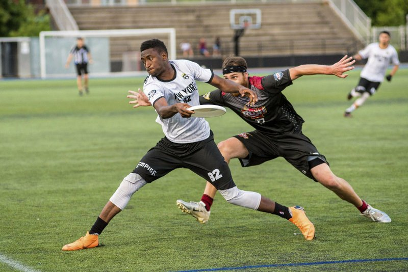

Extreme Frisbee A.K.A Ultimate Frisbee is a low-contact
team sport which is played with a flying disc.
Amongst the community Ultimate Frisbee is looked at as a great sport for anyone to play, from what I can tell there is no age requirement or limit. As long as you're able to play people encourage you to reach out and have fun. Like a lot of other sports, Ultimate instills responsiblity and hard work.

Ultimate even has some well known players like Marques Brownlee or MKBHD as he is known for on Youtube. This highlights the reach that Ultimate has, it might not be as popularized as the NFL or NBA but it has a dedicated fanbase and player pool to keep it going strong.